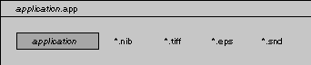
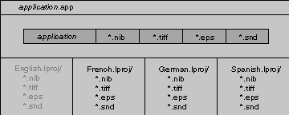

Release 3.3 Copyright ©1995 by NeXT Computer, Inc. All Rights Reserved.
| Localization
This file provides NEXTSTEP application developers with the information needed to develop localized versions of their applications. Conceptual material is presented first, followed by the specific procedures for localizing an application. The information provided here is relevant at any point in the development cycle, so you can either start off your application development process with localization in mind, or you can wait and deal with localization issues once your application is stable. |
| What is Localization? |
| Localization is the process of making your application language-independent, so that a user can choose to use your application in any of a number of languages that you make available. The process of localizing your application consists of two distinct phases: |
| First, you make your application localizable. That is, you build localization support into your application by centralizing the language-specific text, images, and sounds and placing them in files in a language-specific subdirectory of your project directory. | ||
| Second, you localize the application. That is, for each additional language that you wish to support, you create language-specific versions of the text, image, and sound files. This translation process doesn't involve modifications to your source code (although any nib files will need to be edited with Interface Builder), so you can have this step performed for you either by an in-house translator or by an outside translation service. |
| Even if you don't have immediate plans to support multiple languages in your application, there are advantages to designing your application so that it provides support for localization: First, with proper design your application's source code won't have to be touched in order for the application to be localized; therefore, you won't run the risk of introducing additional bugs by putting the necessary hooks in later. Second, testing of the localization code can be done along with the initial monolingual product, so the amount of testing needed for any future localized version will be minimized.
Currently, localization support is provided for the following areas: |
| Embedded text strings | ||
| Text strings in nib files | ||
| TIFF and EPS files (which may contain text or culture-specific images) | ||
| Date, time, and currency formats | ||
| Auxiliary files (such as help files and sound files) |
| In the current release, language support is provided for English, French, German, Italian, Japanese, Portuguese, Spanish, and Swedish. If you wish to provide other localized versions of your application, you'll need to contact NeXT Developer Support for additional information and support. In general, you can localize your application for any language that can be expressed in the standard NEXTSTEP character encoding. |
| Localization Concepts |
| This section briefly describes some concepts that you need to understand in order to prepare your application for localization. A subsequent section describes in detail the procedures you need to follow, and the final two sections describe the functions you'll be using as you modify your source code.
The Preferences Application and Language Prioritization The Preferences application lets users prioritize (that is, set the order of) the languages they prefer to use. In the current release, the language choices that are available in Preferences include English, French, German, and Spanish. If your application isn't localized, users can only use it in the language you wrote it in, no matter how their language preferences are set in Preferences. In order to localize your application, you'll start by placing in external, editable files all the language-specific and culture-specific text, images, and sounds in your application. Then you'll have those files translated into whatever additional languages you wish to support. Once your application contains translated versions of the externalized language-specific files, it can load all the necessary language-specific information from the appropriate set of files, based on the user's language preferences. Thus, your application automatically presents itself to each user in that user's preferred language-ideally (but not necessarily), the user's first choice. For example, assume that one user has given the default system languages the order: |
 1 English
1 English
 2 Spanish
2 Spanish
 3 German
3 German
 4 French
4 French
 5 Italian
5 Italian
 6 Swedish
6 Swedish
 7 Japanese
7 Japanese
 8 Portuguese
8 Portuguese
| and another user has given them the order: |
 1 Spanish
1 Spanish
 2 French
2 French
 3 German
3 German
 4 English
4 English
 5 Italian
5 Italian
 6 Swedish
6 Swedish
 7 Japanese
7 Japanese
 8 Portuguese
8 Portuguese
| If your application supported just English and French, then your application would appear to the first user in English (that user's first choice), and to the second user in French (that user's second choice).
Note: NeXT software and documentation is currently available in English, French, German, Japanese, Spanish, and Swedish. Since the Workspace Manager and other key NeXT applications (for example, Preferences and Mail) are available in these languages, we recommend that you consider supporting one or more of these languages now, and then supporting other languages once NeXT software and documentation become available for them. If you do localize your application for a language not yet supported by NeXT (Russian, for example), you'll have to make that language preference available to your users in the Preferences application. Information about how to extend the user's set of available languages is available from NeXT Developer Support.
Application Directory Organization NEXTSTEP applications (at least those developed prior to Release 3.0) may be represented by a single executable file, which is in Mach-O (Mach object file) format; this executable file contains segments that hold the application's icon, nib archives, images, sounds, and other data: |
| More typically an application is organized as a file package--a special type of directory that looks and behaves like a file. The file package contains the executable file, plus any additional files associated with the application. Although you might still choose to compile interface, image, and sound data into segments of the executable file, the file package organization allows you the option of leaving such information in external files instead. In this case, the organization would look something like this: |
|  |
| The file package organization is useful because it gives the developer a place to store external files used by the application. This is essential when you localize your application, because you need to create one language.lproj subdirectory for each language that you want your application to support; each language.lproj subdirectory will contain the language-specific and culture-specific files used by your application. Here's how your application might be organized when it has been localized (note that the files for the source language have been placed in the executable file, rather than in a ".lproj" directory): |
|  |
| The names for language subdirectories shown in this example aren't arbitrary-the language subdirectories must be named English.lproj, French.lproj, German.lproj, and Spanish.lproj. Specifically, the name language in the language.lproj directory name must be exactly the same as the name of the language as it appears in Preferences. Even if you extend the set of available languages beyond the standard four, you'll need to maintain this exact correspondence between the name of the language as it appears in the directory name and as it appears in Preferences.
Although it's useful for you to understand the structure of the application wrapper and its language-specific subdirectories, you don't have to worry about creating and maintaining the correct directory structure--the ProjectBuilder application manages all these details for you. Note: Throughout this document, source_language is used to refer to whatever language you're using for application development (English is typically used for development, but it need not be); target_language refers to any of a number of additional languages that you intend to support in your application. The terms source_language.lproj and target_language.lproj are used as well.
Functions Used in Localization In addition to organizing the language-specific parts of your application into files contained in your application's ".lproj" subdirectories, you'll also add some functions to your source code in order to access the information contained in those ".lproj" subdirectories. These functions work by first getting the list of languages (as the user has set in Preferences), and then looking through the list in order, until a language is found for which your application has an ".lproj" subdirectory. Once such a match is found, that subdirectory is searched for string files, nib files, or whatever else is needed by your application. In the interest of robustness, these functions are defined in such a way that your application can run even if no ".lproj" directories exist (for example, if a user accidentally deletes them). If the appropriate ".lproj" directory or file isn't found, the source-language version of the language-specific data is searched for internally, in the appropriate section of the executable file. Therefore, you don't actually need to ship a source_language.lproj subdirectory. Instead, you can put that version of your application's nib, image, and sound files into the Mach-O file, just as you probably do now. You'll need to create a source_language.lproj subdirectory as part of the process of localizing your application, but that directory is simply a place for you to put the language-specific files that translators will work from.
String Tables and String Files This section describes string tables and string files, which enable you to externalize and localize the strings that are embedded in your application's source code. First, keep in mind that there are two kinds of embedded strings: those that the user sees, and those that the user doesn't see. An example of a string the user doesn't see is contained in the following C statement: |
 matches = sscanf(s, "%d %d %s", &first, &last, &other);
matches = sscanf(s, "%d %d %s", &first, &last, &other);
| The string "%d %d %s" does not need to be made localizable, since the user never sees it and it has no effect on anything that the user does see (as would a font name). On the other hand, here is an example of a string that the user does see, and that therefore does need to be made localizable: |
 NXRunAlertPanel(NULL, "Your printer is out of paper!", NULL, NULL, NULL);
NXRunAlertPanel(NULL, "Your printer is out of paper!", NULL, NULL, NULL);
| The purpose of a string table is to associate pairs of character strings, where each pair consists of a key and a value. In this example, pairs of keys and values in the string table are used in order to provide French translations of English character strings: |
| Key Value "Yes" "Oui" "No" "Non" "OK" NULL |
| Asking for a value associated with a particular key causes the corresponding value to be returned. If the value is NULL, then the key is returned instead.
Internally, applications use the NXStringTable object to represent these tables of associated keys and values. Externally, these language-specific pairs of keys and values will be stored in string files (which have a ".strings" extension) in your application's language-specific ".lproj" directories. If your application looks in a string file contained in the French.lproj subdirectory, for example, the key "Yes" might have the corresponding value "Oui"; in a string file in your application's German.lproj subdirectory, the corresponding value would be "Ja". If you use the functions described in this paper, your application will automatically use the contents of the appropriate ".lproj" directory to build the internal string table from the external string files, thereby saving you the work of writing this code yourself. Other parts of the process-designing your code to use the appropriate functions and then generating the string files for translation-are described in the remaining parts of this section. Note: See the class description for NXBundle, which is useful for finding localized resources in a directory.
Functions and Macros for Dealing with Localized Strings You make each embedded string in your application localizable by replacing the string with a lookup in a string table and using the value that's returned. To perform this lookup, you use functions such as NXLocalizedString() and NXLocalizedStringFromTable(). These and related functions are described in detail in NEXTSTEP General Reference, but to give you an idea of how they're used, let's take a look at NXLocalizedString(). NXLocalizedString() takes three arguments: |
| NXLocalizedString(key, value, comment) |
| Normally you'll specify the embedded string as the key and NULL as the value, and include a comment that provides contextual information for the person who will be translating the string file. At run-time, NXLocalizedString() simply uses the key to retrieve the corresponding value from the string table and returns that value. If a value isn't found in the string table, then the key string is returned.
Note: The value and comment arguments are used not at run-time, but during application development when you generate the strings file from your source files. For a concrete example of how you would use the NXLocalizedString() function, look again at the string that was shown earlier: |
 NXRunAlertPanel(NULL, "Your printer is out of paper!", NULL, NULL, NULL);
NXRunAlertPanel(NULL, "Your printer is out of paper!", NULL, NULL, NULL);
| To get the localized version of this string, use NXLocalizedString(): |
 NXLocalizedString("Your printer is out of paper!", NULL, Printer Empty message)
NXLocalizedString("Your printer is out of paper!", NULL, Printer Empty message)
| Rather than look up the localized version of the string each time it's needed, a good strategy is to define a macro that retrieves the localized string just once: |
 #define PRINTER_OUT_OF_PAPER \
#define PRINTER_OUT_OF_PAPER \
 NXLocalizedString("Your printer is out of paper!", NULL, Printer Empty message)
NXLocalizedString("Your printer is out of paper!", NULL, Printer Empty message)
 NXRunAlertPanel(NULL, PRINTER_OUT_OF_PAPER, NULL, NULL, NULL);
NXRunAlertPanel(NULL, PRINTER_OUT_OF_PAPER, NULL, NULL, NULL);
| You should use this strategy to localize your application's strings into a single region of #define statements, both to make them easy to locate and also to avoid having to look up a particular string in a string table more than once. Another reason for doing this is to prevent identical entries from being generated in the string file (an entry is generated for each call to NXLocalizedString() or NXLocalizedStringFromTable(), so redundant macro calls must be avoided).
Dealing with Non-Unique Strings It's possible to use the literal string as the value of the key argument to NXLocalizedString() or NXLocalizedStringFromTable() only if the string is unique (that is, occurring only once in a particular string file). If your source code contains a string that isn't unique, you'll need to provide a unique identifier as the key instead, and specify the string as the value. For example, a commonly used string which may require localization is the name of a font, such as Helvetica: |
 pagefont = [Font newFont:"Helvetica" size:12.0];
pagefont = [Font newFont:"Helvetica" size:12.0];
 headerfont = [Font newFont:"Helvetica" size:12.0];
headerfont = [Font newFont:"Helvetica" size:12.0];
| To deal with the fact that the string "Helvetica" occurs twice, for each of the two statements you would use a unique identifier as the key and "Helvetica" as the value, like this: |
 #define PAGE_FONT \
#define PAGE_FONT \
 NXLocalizedString("PageFont", "Helvetica", Font used to draw page)
NXLocalizedString("PageFont", "Helvetica", Font used to draw page)
 #define PAGE_FONT_SIZE \
#define PAGE_FONT_SIZE \
 atof(NXLocalizedString("PageFontSize", "12.0", Font used to draw page))
atof(NXLocalizedString("PageFontSize", "12.0", Font used to draw page))
 #define HEADER_FONT \
#define HEADER_FONT \
 NXLocalizedString("HeaderFont", "Helvetica", Font used to draw header)
NXLocalizedString("HeaderFont", "Helvetica", Font used to draw header)
 #define HEADER_FONT_SIZE \
#define HEADER_FONT_SIZE \
 atof(NXLocalizedString("HeaderFontSize", "12.0", Font used to draw header))
atof(NXLocalizedString("HeaderFontSize", "12.0", Font used to draw header))
 pagefont = [Font newFont:PAGE_FONT size:PAGE_FONT_SIZE];
pagefont = [Font newFont:PAGE_FONT size:PAGE_FONT_SIZE];
 headerfont = [Font newFont:HEADER_FONT size:HEADER_FONT_SIZE];
headerfont = [Font newFont:HEADER_FONT size:HEADER_FONT_SIZE];
| In the present case (where a unique identifier is specified as key and the string is specified as the value), if a value isn't found in the string table then the value string is returned. (Remember that in the previous section--where the string was specified as key, and value was NULL--we said that if a value isn't found, then the key string would be returned.)
Note: The point of making a font name localizable is not that you would translate the string "Helvetica" into another language (which isn't really possible), but that you would substitute some other value in order to use a different font that's more appropriate for the target language. For example, Helvetica doesn't look right mixed with available Japanese fonts, so a more appropriate English-language font needs to be used instead of Helvetica if Japanese is the user's preferred language. Note also that this example externalizes a "literal number"--in this case, 12.0 (again, you wouldn't translate the number 12.0 into other languages, but you might choose to substitute a different font size if it's better for a particular language). If a lot of literal numbers appear in your program, you may want to write your own LocalNumber() function to handle them.
Generating String Files Once your source code and the strings it contains are fairly stable, you'll generate the string file (or files) that will later be translated into the languages that you wish to support in your application. A program called genstrings (in /usr/bin) is available to help you generate the string files automatically. genstrings works by parsing the source files that you specify, extracting the information from each call to NXLocalizedString() and NXLocalizedStringFromTable(), and adding that information to the appropriate string files. Every entry generated from a call to NXLocalizedString() is placed in a file called Localizable.strings and every entry generated from a call to NXLocalizedStringFromTable() is placed in a file called table.strings (where table is the value of the table argument to NXLocalizedStringFromTable()). It's important to understand that genstrings outputs one entry for each call to NXLocalizedString() or NXLocalizedStringFromTable(), and duplicates any identical entries. Therefore, avoid calling either of these functions more than once with the same arguments. In particular, each key must be unique (that is, not occur more than once in a string file).
Editing String Files The format of a string file is fairly simple. Each entry in the file should look like this: |
 /* Comment */
/* Comment */
 "key" = "value";
"key" = "value";
| For each entry, genstrings automatically generates the relevant fields and gives them the values that you specified for the key, value, and comment arguments in the call to the NXLocalizedString() or NXLocalizedStringFromTable() function. The format of the entries generated by genstrings is affected by the values that you supplied as key and value; specifically: |
| If the key argument is a string and the value argument is NULL, the entry initially lacks a value field: |
 /* The message the user receives if the given file isn't found. */
/* The message the user receives if the given file isn't found. */
 "File %s not found.";
"File %s not found.";
| If the key argument is a unique identifier and the value argument is a string, the entry is generated with a value field that contains the string: |
 /* The message the user receives if the given file isn't found. */
/* The message the user receives if the given file isn't found. */
 "FileNotFoundMessage" = "File %s not found.";
"FileNotFoundMessage" = "File %s not found.";
| During the subsequent translation phase, for both these sample entries you would need to provide a value field that contains an equivalent version of the English string "File %s not found." The first entry--localized for French--would look like this: |
 /* The message the user receives if the given file is not found. */
/* The message the user receives if the given file is not found. */
 "File %s not found." = "Fichier %s n'existe pas.";
"File %s not found." = "Fichier %s n'existe pas.";
| and the second entry would look like this: |
 /* The message the user receives if the given file is not found. */
/* The message the user receives if the given file is not found. */
 "FileNotFoundMessage" = "Fichier %s n'existe pas.";
"FileNotFoundMessage" = "Fichier %s n'existe pas.";
| Note the following important points about string files: |
| You must be careful not to make changes to any of the key fields in the string file. | ||
| As shown here, the strings can contain standard printf() format specifications. However, if more than one format specification occurs in a string, they may need to be reordered programmatically to accommodate particular languages. | ||
| Remember that a string like "Helvetica"--rather than requiring translation--might need to be replaced by the name of some other more appropriate font. | ||
| The strings in your application can be grouped into as many string files as you want. Generally, these files should be organized on the basis of related functionality or likelihood of occurrence. The only reason to break strings up into multiple string files is to reduce the number of entries that need to get parsed, so if your application doesn't contain a large number of strings you should probably use a single string file. |
| Translating the External Language-Specific Files
As your application development nears completion, you'll put all the externalized nib, image, sound, and string files into a source_language.lproj subdirectory inside your project directory. You can then give that source_language.lproj directory and its contents to a translator, who should be able to give you back a corresponding French.lproj, German.lproj, or Spanish.lproj (or other_language.lproj) directory. You'll place each of these ".lproj" directories back in the project directory, and make sure that they get installed in the application file package. |
| Procedures for Localizing an Application |
| This section describes the procedures you'll use to make your application localizable. The general sequence of steps is: |
| 1. | Configure your application for localization--that is, identify to ProjectBuilder the files containing localizable information. These might include nib files, TIFF and EPS files, and auxiliary files containing text or sound that needs to be made localizable. | |
| 2. | Make embedded strings localizable. | |
| 3. | Where appropriate, provide for localizd versions of date, time, and currency formats. |
| Once these steps have been performed, you are ready to perform the final step, which is to make one or more localized versions of your application: |
| 4. | Localize (that is, translate) your application for each particular target language. |
| The rest of this section describes these topics in more detail.
Making Nib Files Localizable Many language-specific strings are contained in the nib files generated by Interface Builder (for example, menu commands, button titles, and text in panels). To localize the strings in nib files, you must create and install a language-specific version of each nib file for every target language supported by your application. As a first step, select each of your project's nib files in ProjectBuilder and choose the Make Localizable command in the Files menu. This command puts the selected file into the project's source_language.lproj subdirectory so that it is available for translation.
Making TIFF and EPS Files Localizable Your application's TIFF and EPS files might contain language-specific text within icons, or even icons which are culture-specific. In this case, they should be made localizable as well. The procedure is similar to that described in the previous section: select each TIFF or EPS file in ProjectBuilder and choose the Make Localizable command in the Files menu.
Making Auxiliary Files Localizable If you have sound files, help files, sample documents, or other files that require localization support, you should write a simple function that finds and loads the file from the appropriate ".lproj" directory. The procedure is similar to that described above: select each file in ProjectBuilder and choose the Make Localizable command in the Files menu.
Preparing Embedded Strings Strings embedded in your application's source code must be externalized, so that equivalent strings in another language may be substituted based upon the user's language preferences. (If you're designing an application from scratch, we recommend that you use the functions discussed in this section from the very beginning, so that you won't need to make any changes to your code later.) |
| 1. | Check your application code for occurrences of embedded strings, and replace each one with a call to NXLocalizedString() or NXLocalizedStringFromTable(). For example, you would replace a statement of the form: |
 string = "value";
string = "value";
| with one of the following functions: |
 string = NXLocalizedString("key", "value", "comment");
string = NXLocalizedString("key", "value", "comment");
 string = NXLocalizedStringFromTable("table_name","key","value","comment");
string = NXLocalizedStringFromTable("table_name","key","value","comment");
| Before using the NXLocalizedString() and NXLocalizedStringFromTable() functions, be sure that you've read and understood the information in the sections "String Tables" and "Function Descriptions"." It's important that you understand what these two functions do and how they differ from each other. In particular, remember that each NXLocalizedString() and NXLocalizedStringFromTable() statement must occupy no more than one line (due to limitations in the genstrings program), and that each key needs to be unique within the context of its string table. |
| 2. | Once you are sure that the embedded strings in your source code use the NXLocalizedString() and NXLocalizedStringFromTable() functions, run genstrings on your source code in order to generate the primary "app_name.strings" file and any additional string files: |
 > cd app_dir/source_language.lproj
> cd app_dir/source_language.lproj
 > genstrings ../*.[hcm] > app_name.strings
> genstrings ../*.[hcm] > app_name.strings
| The genstrings program outputs to stdout one line for each call made to NXLocalizedString() (which is why you need to redirect stdout to a string file with the same name as the application), and creates in the current directory a file for each table named in a NXLocalizedStringFromTable() call (which is why you need to cd to source_language.lproj before issuing this command). If genstrings encounters any problems, it reports them on stderr.
Remember to delete your old string files before running genstrings a second time. If a string file already exists, genstrings will append additional strings to it, so your old strings could still stay around. |
| Displaying Date, Time, and Currency Formats
Most applications don't display date, time, or currency information, and therefore won't require any changes to support localization of such formats. Of the applications in which providing such information is critical, most will provide application-specific ways for the user to choose among various alternative formats, independent of the user's choice of system language. If you are one of the small number of developers who need a simple way to provide basic support for localized date or time formats, you can use the standard ANSI C functions strftime() and localtime(), which get format information from settings in the user's defaults database. For more information about these functions (and related functions such as localeconv()) and how they interact with the NEXTSTEP defaults mechanism, see the file CLibLocalization.rtf in /NextLibrary/Documentation/NextDev/Concepts. One thing to be aware of is that the date, time, and currency formats specified in the user's defaults database don't change when the user changes his or her preferred order of languages in Preferences. These defaults do change, however, when the user installs a NeXT-supplied language-specific version of NeXT software and specifies that language as the primary language (rather than simply as an alternate language). Currently this can only be done for French, German Japanese, Spanish, and Swedish, using the official packages. Since the variables for date, time, and currency formats in the user's defaults database are global variables, your application shouldn't change their values.
Localizing Your Application for a Particular Target Language The following steps can be performed when your application development is complete and the contents of the source_language.lproj directory are ready for translation. Perform this sequence of steps (or have them performed by a capable translator) for each target language that you want to make available in your application. |
| 1. | Using ProjectBuilder, create a target_language.lproj subdirectory in the same directory as the source_language.lproj subdirectory, and copy all the language-specific files from the source_language.lproj subdirectory into the target_language.lproj subdirectory. | |
| 2. | Open and edit each string file contained in the target_language.lproj subdirectory. For each line containing a standalone key string, translate the key string into the target language. For example: |
 /* The message the user receives if the given file isn't found. */
/* The message the user receives if the given file isn't found. */
 "File %s not found.";
"File %s not found.";
| might be edited as follows for a French version: |
 /* The message the user receives if the given file isn't found. */
/* The message the user receives if the given file isn't found. */
 "File %s not found." = "Fichier %s n'existe pas.";
"File %s not found." = "Fichier %s n'existe pas.";
| If a line in the string file contains a key = value pair rather than just a key: |
 /* The message the user receives if the given file isn't found. */
/* The message the user receives if the given file isn't found. */
 "FileNotFoundString" = "File %s not found.";
"FileNotFoundString" = "File %s not found.";
| then leave the key string untouched and translate the value string into the target language: |
 /* The message the user receives if the given file isn't found. */
/* The message the user receives if the given file isn't found. */
 "FileNotFoundString" = "Fichier %s n'existe pas.";
"FileNotFoundString" = "Fichier %s n'existe pas.";
| When you're done with each file, remember to save it to the target_language.lproj subdirectory. |
| Remember that strings such as "Helvetica" and "12.0" aren't meant to be translated; however, they may need be replaced with values that are more appropriate for the target language.
Note: Format strings (%s, %d, etc.) may need to have their arguments reordered programmatically to accommodate particular languages. If you discover such cases during the translation phase, you may need to go back and modify the source code in order to handle them. |
| 3. | Using Interface Builder, open each nib file in the target_language.lproj subdirectory. Edit all text strings (in menus, panels, windows, etc.), translating the text into the target language. |
| Note: Translating text strings in nib files may require some resizing of panels, windows, and controls as well. |
| 4. | Check the contents of each TIFF and EPS file in the target_language.lproj subdirectory. Where appropriate, edit text and images to be consistent with not just the target language, but also the target culture (for example, the image of a mailbox or trash can--even if no text is visible--may need to be changed in order to be recognizable). | |
| 5. | If the target_language.lproj subdirectory contains any additional sound files, help files, sample documents, or other text files that require localization support, these files also need to be translated and saved. |
| Once these steps have been completed, use ProjectBuilder to copy the target_language.lproj subdirectory into the project. Then try running make install on your project. Check to make sure that no errors are generated during the compilation or installation process. Try running the installed application in the target language to ensure that everything is working properly.
Summary The procedures described above are intended to cover the commonly encountered situations that might require localization support in an application. In addition to checking for and accommodating these common cases, you should review your application by looking for any other special situations that this document hasn't addressed. In general, if there is any text that might appear on the user's screen, that text should be externalized and placed in the source_language.lproj directory so that it can be translated into your application's target languages. If you encounter any other areas that you find require localization support, please let us know so that we can provide that information in a future release of this document. |